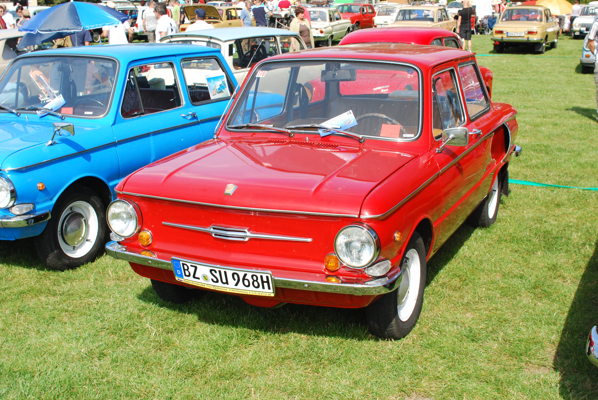

Запорожець ЗАЗ-965


Запорожець ЗАЗ-966
Запорожець ЗАЗ-965

Запорожець ЗАЗ-965. У 1962 році ЗАЗ-965 був модернізований і в жовтні встав на конвеєр під назвою ЗАЗ-965А.ЗАЗ-965 перетворювався на ЗАЗ-965А традиційно для радянського автопрома методом послідовних наближень - починаючи з жовтня 1962 року (двигун змінився на новий МЕМ3-966 потужністю 27 к.с і робочим об'ємом 0,887 л) десь до квітня-травня 1963 року(була встановлена нова коробка передач з передавальними числами,зміненими під МЕМ3-966).З вересня 1963 року змінився капот.Номер почав розташуватися вище,змінився корпус ліхтаря підсвічування номера.